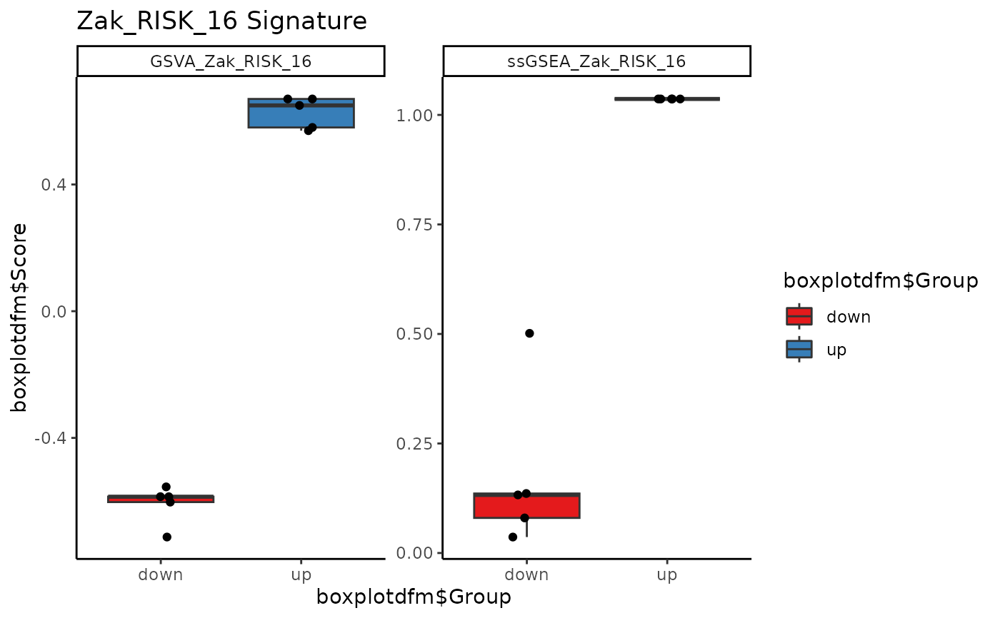

Plot a boxplot of signature genes.
Usage
signatureBoxplot(
inputData,
annotationData,
signatureColNames,
annotationColName,
name = "Signatures",
scale = FALSE,
violinPlot = FALSE,
includePoints = TRUE,
notch = FALSE,
rotateLabels = FALSE,
nrow = NULL,
ncol = NULL,
fill_colors = NULL
)Arguments
- inputData
an input data object. It should either be of the class
SummarizedExperimentand contain the profiled signature data and annotation data as columns in thecolData, or alternatively be of the classesdata.frameormatrixand contain only the gene expression data. Required.- annotationData
a
data.frameormatrixof annotation data, with one column. Only required ifinputDatais adata.frameormatrixof signature data.- signatureColNames
a
vectorof the column names incolDatathat contain the signature data. Only required ifinputDatais aSummarizedExperimentobject.- annotationColName
a character string naming the column name in the
colDatathat contains the annotation data to be used in making the boxplot. Only required if inputData is aSummarizedExperimentobject.- name
a character string giving the title of the boxplot. The default is
"Signatures".- scale
logical. Setting
scale = TRUEscales the signature data. The default isFALSE.- violinPlot
logical. Setting
violinPlot = TRUEcreates violin plots in place of boxplots. The default isFALSE.- includePoints
logical. If
TRUE, points will be included over the boxplots. The default isTRUE.- notch
logical. Notches are used to compare groups; if the notches of two boxes do not overlap, this suggests that the medians are significantly different. If
TRUE, the boxplot will be notched. The default isFALSE.- rotateLabels
logical. If
TRUE, the x-axis labels will be rotated. The default isFALSE.- nrow
integer giving the number of rows in the resulting array.
- ncol
integer giving the number of columns in the resulting array.
- fill_colors
a vector of color names to be used as the fill colors for the boxplot. If
NULL, colors will be supplied via RColorBrewer. The default isfill_colors = NULL.
Examples
library(SummarizedExperiment)
# Generate some artificial data that shows a difference in Zak_RISK_16
mat_testdata <- rbind(matrix(c(rnorm(80), rnorm(80) + 5), 16, 10,
dimnames = list(TBsignatures$Zak_RISK_16,
paste0("sample", seq_len(10)))),
matrix(rnorm(1000), 100, 10,
dimnames = list(paste0("gene", seq_len(100)),
paste0("sample", seq_len(10)))))
# Create a SummarizedExperiment object that contains the data
testdataSE <- SummarizedExperiment(assays = SimpleList(data = mat_testdata),
colData = DataFrame(sample =
c(rep("down", 5),
rep("up", 5))))
# Run profiler using GSVA and ssGSEA on Zak_RISK_16 signature
res <- runTBsigProfiler(testdataSE, useAssay = "data",
signatures = TBsignatures["Zak_RISK_16"],
algorithm = c("GSVA", "ssGSEA"), parallel.sz = 1,
combineSigAndAlgorithm = TRUE)
#> Parameter update_genes is TRUE. Gene names will be updated.
#> Running GSVA
#> Estimating GSVA scores for 1 gene sets.
#> Estimating ECDFs with Gaussian kernels
#>
|
| | 0%
|
|======================================================================| 100%
#>
#> Running ssGSEA
#> Estimating ssGSEA scores for 1 gene sets.
#> [1] "Calculating ranks..."
#> [1] "Calculating absolute values from ranks..."
#>
|
| | 0%
|
|======= | 10%
|
|============== | 20%
|
|===================== | 30%
|
|============================ | 40%
|
|=================================== | 50%
|
|========================================== | 60%
|
|================================================= | 70%
|
|======================================================== | 80%
|
|=============================================================== | 90%
|
|======================================================================| 100%
#>
#> [1] "Normalizing..."
signatureBoxplot(res, signatureColNames = c("GSVA_Zak_RISK_16",
"ssGSEA_Zak_RISK_16"),
annotationColName = "sample", name = "Zak_RISK_16 Signature")
